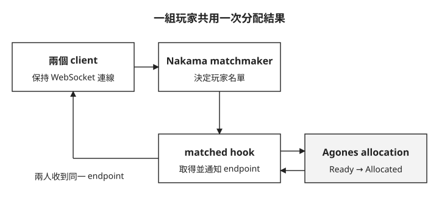

Day 6: 兩位玩家配對後，如何進入同一台 GameServer？¶

兩位玩家都已登入，也按下「開始配對」。其中一人拿到伺服器位置，另一人卻一直等待；或者兩人各自進入不同伺服器。這時只確認登入成功，無法回答問題：誰決定這兩個人是一組，又由誰替這一組保留同一台遊戲伺服器？
本章把這兩個決定接起來。你會讀 Nakama 的配對事件、Agones 的分配回應，再對照兩位 client 收到的位置。判斷成功的依據是「同一組玩家收到同一次 allocation 的結果」，而不只是某個 API 回應成功。
Matchmaking 與 allocation 是兩件事¶
先看玩家名單。Nakama 內建的 matchmaker 負責配對：把符合條件的玩家湊成一組，讓每個 client 都收到同一場配對成立的事件。Agones 負責分配 server：從 Ready pool 裡挑一顆 GameServer，把它轉成 Allocated，並回傳玩家可以連線的 address:port。只完成湊人，玩家還不知道要連去哪裡；只做 allocation，分配結果尚未對應玩家名單。兩者中間要有一段程式把它們接起來。
配對一成立就要執行分配，所以需要能在 Nakama 裡執行的自訂程式，稱為 server runtime module。它是跑在 Nakama 裡的自訂後端邏輯，可以用 Lua、Go 或 JavaScript/TypeScript 寫；module 在 Nakama 啟動時載入，用 hook 註冊事件發生時要執行的函式。matchmaker_matched hook 剛好是接 Agones 的位置：Nakama 已經決定哪些玩家湊成同一組，但 client 還需要同一組遊戲伺服器 endpoint。
hook 要建立 GameServerAllocation，就是呼叫 Kubernetes API。Kubernetes API 不會因為請求來自叢集內就自動信任它；Nakama Pod 用 ServiceAccount token 證明它代表哪個工作負載，再透過 RBAC 規則取得權限，才被允許在 Agones Fleet 所在 namespace 建立 gameserverallocations。本章新增的 Role 只授予 create allocation；它本身不授予列出或修改 GameServer 的權限。實際有效權限仍會包含同一身分的其他 RoleBinding。
先順著圖看伺服器端的兩個決定，再看結果如何回到同一組玩家。圖中的 endpoint 就是可以連線的位址與 port。

分配只做一次，通知卻要送給每位玩家。若兩邊各自呼叫 allocation，就可能拿到不同 GameServer；把分配放在同一次配對的 hook 裡，才能共用結果。
配對結果怎麼回到 client¶
client 完成 Day 5 的登入後，先開 realtime WebSocket，再送 matchmaker_add。這是持續連線的介面，Nakama 可以在配對成立時主動傳回訊息。之後不再主動發問，而是在同一條 socket 上等 server 推訊息下來。它會收到兩則訊息：
matchmaker_matched：Nakama 內建的配對成立事件，列出同組有哪些玩家。- code
6006的 notification：本章 Lua hook 自己送出的通知，內容是 Agones 分配到的address、port與GameServer名稱。6006是本章自訂的通知代碼，client 靠它分辨「這是 server endpoint」。
把 endpoint 送回 client 還有另一種做法：client 收到 matchmaker_matched 後，透過 RPC（呼叫後端自訂函式）查詢「我該連哪裡」。這裡選 notification，因為配對成立的時間點由 server 決定，由 server 主動推比 client 事後來問少一次來回。
matchmaker_matched 裡也有一個 token 欄位，但它和 Day 4 的 Quilkin routing token 無關。這個 token 是給 Nakama 自己的多人對戰（client relayed match）用的，client 拿它呼叫 match join，就能加入一場由 Nakama 轉送訊息的對戰。對戰跑在 Agones 的 dedicated game server 上時，不走 Nakama match，這個 token 用不到，client 真正要用的是 notification 裡的 address:port。
先確認部署位置與既有資源¶
本章沿用 Day 5 的 nakama namespace、PostgreSQL 與 Nakama Service，以及 default namespace 裡的 simple-game-server Fleet。至少要有一顆 Ready GameServer，配對成功後才有伺服器可分配。若仍沿用 Day 3 的 buffer autoscaler，分配後會補足 Ready 容量；固定 replicas 的 Fleet 不會因 allocation 自動擴大。
請在課程儲存庫的 labs/sprint5/day6/ 目錄操作，使用其中完整的 rbac.yaml、nakama-module-configmap.yaml、nakama-deployment.yaml 與 mm_client.py。以下程式與 Deployment YAML 是重點節錄，不是完整可部署檔案。本機需有 Python 3 與 websockets 套件；client 連到本機 7350，由 port-forward 接到 Nakama。
步驟 1:授權 Nakama 建立 GameServerAllocation¶
RBAC 只開 create gameserverallocations，而且 Role 放在 Agones Fleet 所在的 default namespace（完整檔案：rbac.yaml）：
apiVersion: rbac.authorization.k8s.io/v1
kind: Role
metadata:
name: nakama-gameserverallocation-create
namespace: default
rules:
- apiGroups:
- allocation.agones.dev
resources:
- gameserverallocations
verbs:
- create
---
apiVersion: rbac.authorization.k8s.io/v1
kind: RoleBinding
metadata:
name: nakama-gameserverallocation-create
namespace: default
roleRef:
apiGroup: rbac.authorization.k8s.io
kind: Role
name: nakama-gameserverallocation-create
subjects:
- kind: ServiceAccount
name: nakama
namespace: nakama
用前章的 kubectl apply -f 方式套用完整 rbac.yaml 後，再以 kubectl auth can-i 確認這個 ServiceAccount 能否建立 allocation：
$ kubectl auth can-i create gameserverallocations.allocation.agones.dev --as=system:serviceaccount:nakama:nakama -n default
yes
yes 回答的是這次詢問的 create 權限；它沒有檢查網路連線，也沒有證明 Pod 已掛載 token。下一步補上這兩者之間的程式。
步驟 2:掛入 Lua runtime module¶
Lua module 放在 ConfigMap nakama-agones-matchmaker 裡（完整檔案：nakama-module-configmap.yaml）。主線是四步：讀 ServiceAccount token、POST GameServerAllocation、從回應取 status.address 與 status.ports[].port、把 endpoint 通知給 matched users。呼叫 Kubernetes API 的部分：
local function allocate_gameserver(context)
local token = context.env and context.env["K8S_TOKEN"] or nil
if token == nil or token == "" then
error("K8S_TOKEN runtime env is missing")
end
local allocation_body = nk.json_encode({
apiVersion = "allocation.agones.dev/v1",
kind = "GameServerAllocation",
spec = {
selectors = {
{
matchLabels = {
["agones.dev/fleet"] = "simple-game-server",
},
},
},
},
})
local headers = {
["Authorization"] = "Bearer " .. token,
["Content-Type"] = "application/json",
["Accept"] = "application/json",
}
local code, _, body = nk.http_request(
"https://kubernetes.default.svc/apis/allocation.agones.dev/v1/namespaces/default/gameserverallocations",
"POST",
headers,
allocation_body,
5000,
true
)
nk.http_request 的最後一個參數 true 會略過 TLS 驗證，只適合 lab。回應的 status.state 不是 Allocated、或缺 address 與 port 時，完整版會直接 error()，讓 Nakama log 留下原因。
配對成立後，hook 對每個 matched user 送 persistent notification：
local function matchmaker_matched(context, matched_users)
nk.logger_info(string.format("sprint5-day6 matchmaker_matched users=%d", #matched_users))
local allocation = allocate_gameserver(context)
local content = {
address = allocation.address,
port = allocation.port,
gameserver = allocation.gameserver,
endpoint = string.format("%s:%s", allocation.address, tostring(allocation.port)),
}
for _, entry in ipairs(matched_users) do
nk.notification_send(
entry.presence.user_id,
"sprint5-day6-allocation",
content,
6006,
"",
true
)
end
return ""
end
nk.register_matchmaker_matched(matchmaker_matched)
Deployment 要開 pod 內的 ServiceAccount token，並把 ConfigMap 的 main.lua 用 subPath 掛成單檔（完整檔案：nakama-deployment.yaml）：
spec:
serviceAccountName: nakama
automountServiceAccountToken: true
containers:
- name: nakama
args:
- |
DB_ADDR="postgres:${POSTGRES_PASSWORD}@postgres.nakama.svc.cluster.local:5432/nakama"
K8S_TOKEN="$(cat /var/run/secrets/kubernetes.io/serviceaccount/token)"
exec /nakama/nakama --name nakama-0 --database.address "$DB_ADDR" --logger.level INFO --session.token_expiry_sec 7200 --runtime.path /nakama/data/modules --runtime.env "K8S_TOKEN=${K8S_TOKEN}"
volumeMounts:
- name: runtime-modules
mountPath: /nakama/data/modules/main.lua
subPath: main.lua
readOnly: true
automountServiceAccountToken: true 要寫在 pod spec，因為 Day 5 的 ServiceAccount 關掉了自動掛載，需要在這裡覆蓋設定，Pod 才會掛載 Kubernetes API token。用 subPath 是為了避免 Nakama 掃到 ConfigMap 投影目錄裡的同一份 Lua 檔兩次。
先套用完整 nakama-module-configmap.yaml，再套用 nakama-deployment.yaml，讓新的 Pod 掛到 module。這份 Deployment 已包含 module revision annotation；之後若只修改 ConfigMap，還要觸發新的 Pod，不能期待 subPath 掛載的檔案自動更新。
步驟 3:確認 Nakama 載入 module 並註冊 hook¶
重啟後，Nakama log 必須同時出現 module 載入、module count 與 hook registration：
$ kubectl -n nakama logs deployment/nakama -c nakama --tail=120
{"level":"info","ts":"2026-09-05T05:18:32.957Z","caller":"server/runtime.go:671","msg":"Initialising runtime","path":"/nakama/data/modules"}
{"level":"info","ts":"2026-09-05T05:18:32.958Z","caller":"server/runtime_lua.go:119","msg":"Initialising Lua runtime provider","path":"/nakama/data/modules"}
{"level":"info","ts":"2026-09-05T05:18:32.962Z","caller":"server/runtime_lua_nakama.go:2373","msg":"sprint5-day6 Agones matchmaker module loaded","runtime":"lua"}
{"level":"info","ts":"2026-09-05T05:18:32.963Z","caller":"server/runtime_lua.go:1288","msg":"Lua runtime modules loaded"}
{"level":"info","ts":"2026-09-05T05:18:32.963Z","caller":"server/runtime.go:771","msg":"Found runtime modules","count":1,"modules":["main.lua"]}
{"level":"info","ts":"2026-09-05T05:18:32.963Z","caller":"server/runtime.go:2657","msg":"Registered Lua runtime Matchmaker Matched function invocation"}
{"level":"info","ts":"2026-09-05T05:18:33.313Z","caller":"main.go:243","msg":"Startup done"}
要看的是 count=1。若顯示 count=2 並載入兩次同名 module，通常是整個 ConfigMap 目錄被掛進 runtime path。Nakama rollout 之後，先前的 port-forward 可能還指向已刪除的 Pod。請在另一個終端機重新執行 kubectl -n nakama port-forward svc/nakama 7350:7350 並保持它開著，再測 client。
步驟 4:送兩個 realtime client 進 matchmaker¶
配對成立時 hook 要分配一顆 server，所以 simple-game-server Fleet 至少要有 1 顆 Ready。
本機需先安裝 Python 3.12，以下在 labs/sprint5/day6/ 目錄使用 bash／zsh 操作。
先建立並啟用虛擬環境，安裝 websockets==17.1 並檢查能否匯入（依官方文件補上，本課沒有實跑；參考 Python 3.12 虛擬環境與套件安裝、websockets 17.1 安裝文件）：
python3.12 -m venv .venv
source .venv/bin/activate
python -m pip install "websockets==17.1"
python -c "import websockets"
後續的 python3 mm_client.py 請在同一個已啟用虛擬環境的終端機執行。
測試 client（mm_client.py）做三件事：REST device auth、WebSocket 送 matchmaker_add、等待 matchmaker_matched 與 code 6006 notification。它用 Python 的 websockets 套件開 realtime socket（沿用已安裝 websockets 的 Python 環境），下面只列等待訊息的迴圈。結束條件要兩者都滿足：
while time.monotonic() < deadline and (endpoint is None or matched is None):
raw = await asyncio.wait_for(socket.recv(), timeout=max(1, deadline - time.monotonic()))
message = json.loads(raw)
if "matchmaker_matched" in message:
matched = message["matchmaker_matched"]
for notification in message.get("notifications", {}).get("notifications", []):
content = notification.get("content", {})
if isinstance(content, str):
content = json.loads(content)
if notification.get("code") == 6006:
endpoint = content
client 必須同時收到 matchmaker_matched 與 code 6006 通知才結束，不能依賴兩者的先後順序；只等 notification 就離線，可能漏掉配對事件。
先查詢 default namespace 的 GameServer 狀態，把 <context> 換成你的 Kubernetes context。下面的 simple-game-server-ql5ws-qknrb 還是 Ready，port 是 7170；輸出中的 20.89.45.184 對應 client 與 hook 範例裡的 <NODE-IP>。
$ kubectl --context <context> -n default get gs -o wide
NAME STATE ADDRESS PORT NODE AGE
simple-game-server-ql5ws-b5xr7 Allocated 20.89.45.184 7499 aks-gamesrv-18046246-vmss000003 5d2h
simple-game-server-ql5ws-jkzn4 Allocated 20.89.45.184 7441 aks-gamesrv-18046246-vmss000003 3d3h
simple-game-server-ql5ws-khc5t Allocated 20.89.45.184 7107 aks-gamesrv-18046246-vmss000003 5d2h
simple-game-server-ql5ws-qknrb Ready 20.89.45.184 7170 aks-gamesrv-18046246-vmss000003 2m19s
simple-game-server-ql5ws-w46dh Ready 20.89.45.184 7122 aks-gamesrv-18046246-vmss000003 3m49s
接著執行 python3 mm_client.py。下表整理兩個 client 收到的事件與分配結果，省略身分、session、ticket、token 與通知時間等欄位；完整輸出保留在下方。
| 比較項目 | client-a | client-b |
|---|---|---|
| 配對事件 | 收到 matchmaker_matched |
收到 matchmaker_matched |
| 分配通知 | 收到 code 6006 |
收到 code 6006 |
| GameServer | simple-game-server-ql5ws-qknrb |
simple-game-server-ql5ws-qknrb |
| endpoint | <NODE-IP>:7170 |
<NODE-IP>:7170 |
兩人的 GameServer 名稱與 endpoint 都相同，SUMMARY 的 same_endpoint 也為 true。
client 執行指令與完整輸出
$ python3 mm_client.py
client-a: auth user_id=<user-a> token=<redacted>
client-b: auth user_id=<user-b> token=<redacted>
client-a: ws {"cid": "client-a", "matchmaker_ticket": {"ticket": "<ticket-a>"}}
client-b: ws {"cid": "client-b", "matchmaker_ticket": {"ticket": "<ticket-b>"}}
client-b: ws {"notifications": {"notifications": [{"code": 6006, "content": "{\"address\":\"<NODE-IP>\",\"endpoint\":\"<NODE-IP>:7170\",\"gameserver\":\"simple-game-server-ql5ws-qknrb\",\"port\":7170}", "create_time": "2026-09-05T05:19:18Z", "id": "<notif-b>", "persistent": true, "sender_id": "<system-sender>", "subject": "sprint5-day6-allocation"}]}}
client-b: ws {"matchmaker_matched": {"self": {"presence": {"session_id": "<session-b>", "user_id": "<user-b>", "username": "WxTuzBAMQU"}}, "ticket": "<ticket-b>", "token": "<redacted>", "users": [{"presence": {"session_id": "<session-b>", "user_id": "<user-b>", "username": "WxTuzBAMQU"}}, {"presence": {"session_id": "<session-a>", "user_id": "<user-a>", "username": "MXqRJCrXaj"}}]}}
client-a: ws {"notifications": {"notifications": [{"code": 6006, "content": "{\"address\":\"<NODE-IP>\",\"endpoint\":\"<NODE-IP>:7170\",\"gameserver\":\"simple-game-server-ql5ws-qknrb\",\"port\":7170}", "create_time": "2026-09-05T05:19:18Z", "id": "<notif-a>", "persistent": true, "sender_id": "<system-sender>", "subject": "sprint5-day6-allocation"}]}}
client-a: ws {"matchmaker_matched": {"self": {"presence": {"session_id": "<session-a>", "user_id": "<user-a>", "username": "MXqRJCrXaj"}}, "ticket": "<ticket-a>", "token": "<redacted>", "users": [{"presence": {"session_id": "<session-b>", "user_id": "<user-b>", "username": "WxTuzBAMQU"}}, {"presence": {"session_id": "<session-a>", "user_id": "<user-a>", "username": "MXqRJCrXaj"}}]}}
SUMMARY {"endpoint": "<NODE-IP>:7170", "results": [{"allocation": {"address": "<NODE-IP>", "endpoint": "<NODE-IP>:7170", "gameserver": "simple-game-server-ql5ws-qknrb", "port": 7170}, "client": "client-a", "matched": {"self": {"presence": {"session_id": "<session-a>", "user_id": "<user-a>", "username": "MXqRJCrXaj"}}, "ticket": "<ticket-a>", "token": "<redacted>", "users": [{"presence": {"session_id": "<session-b>", "user_id": "<user-b>", "username": "WxTuzBAMQU"}}, {"presence": {"session_id": "<session-a>", "user_id": "<user-a>", "username": "MXqRJCrXaj"}}]}, "notifications_count": 1, "user_id": "<user-a>"}, {"allocation": {"address": "<NODE-IP>", "endpoint": "<NODE-IP>:7170", "gameserver": "simple-game-server-ql5ws-qknrb", "port": 7170}, "client": "client-b", "matched": {"self": {"presence": {"session_id": "<session-b>", "user_id": "<user-b>", "username": "WxTuzBAMQU"}}, "ticket": "<ticket-b>", "token": "<redacted>", "users": [{"presence": {"session_id": "<session-b>", "user_id": "<user-b>", "username": "WxTuzBAMQU"}}, {"presence": {"session_id": "<session-a>", "user_id": "<user-a>", "username": "MXqRJCrXaj"}}]}, "notifications_count": 1, "user_id": "<user-b>"}], "same_endpoint": true}
注意 notification 比 matchmaker_matched 先到：hook 在 Nakama 送出 matched 事件之前執行，所以 client 不能假設先後順序。
再查 Nakama hook log，對照配對人數、分配到的 GameServer 與 endpoint：
$ kubectl -n nakama logs deployment/nakama -c nakama --since=3m | grep 'sprint5-day6'
{"level":"info","ts":"2026-09-05T05:18:32.962Z","caller":"server/runtime_lua_nakama.go:2373","msg":"sprint5-day6 Agones matchmaker module loaded","runtime":"lua"}
{"level":"info","ts":"2026-09-05T05:19:17.964Z","caller":"server/runtime_lua_nakama.go:2370","msg":"sprint5-day6 matchmaker_matched users=2","runtime":"lua","mode":"matchmaker"}
{"level":"info","ts":"2026-09-05T05:19:18.203Z","caller":"server/runtime_lua_nakama.go:2370","msg":"sprint5-day6 allocation response {\"address\":\"<NODE-IP>\",\"gameserver\":\"simple-game-server-ql5ws-qknrb\",\"port\":7170,\"state\":\"Allocated\"}","runtime":"lua","mode":"matchmaker"}
{"level":"info","ts":"2026-09-05T05:19:18.211Z","caller":"server/runtime_lua_nakama.go:2370","msg":"sprint5-day6 allocated gameserver=simple-game-server-ql5ws-qknrb endpoint=<NODE-IP>:7170 users=2","runtime":"lua","mode":"matchmaker"}
users=2 對應這次配對的兩位玩家；allocation 回應的 simple-game-server-ql5ws-qknrb 與 <NODE-IP>:7170 也和兩個 client 收到的一致。
最後再查一次 GameServer 狀態，和執行 client 前的輸出比較：
$ kubectl --context <context> -n default get gs -o wide
NAME STATE ADDRESS PORT NODE AGE
simple-game-server-ql5ws-8rhnv Ready 20.89.45.184 7295 aks-gamesrv-18046246-vmss000003 8s
simple-game-server-ql5ws-b5xr7 Allocated 20.89.45.184 7499 aks-gamesrv-18046246-vmss000003 5d2h
simple-game-server-ql5ws-jkzn4 Allocated 20.89.45.184 7441 aks-gamesrv-18046246-vmss000003 3d3h
simple-game-server-ql5ws-khc5t Allocated 20.89.45.184 7107 aks-gamesrv-18046246-vmss000003 5d2h
simple-game-server-ql5ws-qknrb Allocated 20.89.45.184 7170 aks-gamesrv-18046246-vmss000003 2m38s
simple-game-server-ql5ws-w46dh Ready 20.89.45.184 7122 aks-gamesrv-18046246-vmss000003 4m8s
simple-game-server-ql5ws-qknrb 從 Ready 轉成 Allocated，位址與 port 維持 20.89.45.184:7170。原本已有的三顆 Allocated 沒有改變，這次只新增一次 allocation；沿用的 buffer autoscaler 另補出一顆 Ready 的 simple-game-server-ql5ws-8rhnv。
想一想¶
- RBAC 查詢回
yes，Pod 卻找不到 token 檔案，還缺少哪一項部署設定？ - client 只收到 code
6006通知便離線，為什麼不能據此認定它也收到配對事件？ - 兩位玩家都收到 endpoint，還要如何確認那是同一次 allocation 的結果？
小結¶
本章讓 Nakama 決定玩家名單，再由同一次 hook 向 Agones 取得一台 GameServer，將同一份結果送給所有 matched users。判讀時要把身分與授權、module 載入、兩種 client 訊息及 GameServer 狀態接起來看。拿到 endpoint 仍不代表 UDP 已送達；這是下一章要補的證據。
正式環境還要補的¶
這裡的 hook 呼叫 Kubernetes API 時略過了 TLS 驗證（insecure=true），正式環境要改成驗證叢集 CA。allocation 失敗時也只會在 Nakama log 留下錯誤，client 收不到 allocation 通知；後續需設計失敗回報，以及能避免重複分配的重試策略。ServiceAccount token 在本例啟動時讀取一次，也沒有實作長時間執行時的憑證更新。
延伸閱讀¶
想再深入，可以從這幾份開始：
- Nakama Lua runtime —— 查 Lua module 載入、runtime API 與 hook 寫法。
- Nakama configuration —— 對照本章用
--runtime.env把 Kubernetes token 傳入 Lua context 的做法。 - Nakama matchmaker —— 查 realtime matchmaker、
matchmaker_add與 matched event 的語意。 - Nakama notifications —— 對照本章用 code
6006persistent notification 把 allocation 結果送回 client。 - Agones access API —— 查從 Kubernetes API 建立
GameServerAllocation與讀取 allocation status 的路徑。
下一步¶
到這裡，玩家可以登入 Nakama、進 matchmaker，並拿到 Agones 分配的 GameServer endpoint。Day 7 換到玩家那一側，用一支只靠 Python 標準函式庫的 client 走完登入、配對、RPC 查詢，再把 UDP 封包經 Quilkin 送進分配到的 GameServer。
Nakama 標誌為 Heroic Labs 之官方資產，此處作社群教學用途。